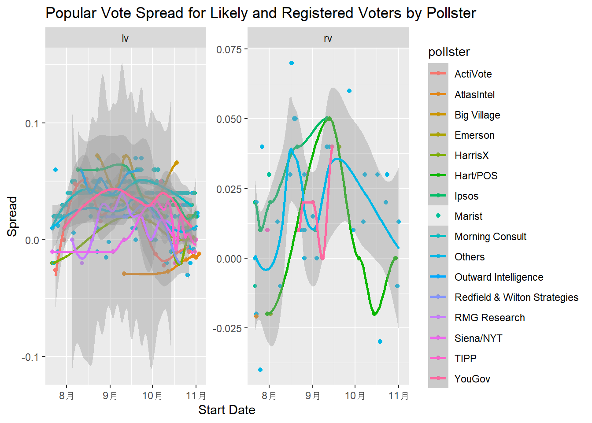

url <- "https://raw.githubusercontent.com/dmcable/BIOSTAT620/refs/heads/main/data/president_polls.csv"Problem set 6
For this problem set we want you to predict the 2024 election. You you will report a prediction of the number of electoral votes for Harris and an interval. You will do the same for the popular vote. You will compare your accuracy to the true results.
- Read in the data provided here:
Examine the data frame paying particular attention to the poll_id question_id, population, and candidate. Note that some polls have more than one question based on different population types.
library(tidyverse)── Attaching core tidyverse packages ──────────────────────── tidyverse 2.0.0 ──
✔ dplyr 1.1.4 ✔ readr 2.1.5
✔ forcats 1.0.0 ✔ stringr 1.5.1
✔ ggplot2 3.5.1 ✔ tibble 3.2.1
✔ lubridate 1.9.4 ✔ tidyr 1.3.1
✔ purrr 1.0.2
── Conflicts ────────────────────────────────────────── tidyverse_conflicts() ──
✖ dplyr::filter() masks stats::filter()
✖ dplyr::lag() masks stats::lag()
ℹ Use the conflicted package (<http://conflicted.r-lib.org/>) to force all conflicts to become errorslibrary(rvest)
载入程序包：'rvest'
The following object is masked from 'package:readr':
guess_encodingraw_dat <- read_csv(url)### Your code hereRows: 18095 Columns: 52
── Column specification ────────────────────────────────────────────────────────
Delimiter: ","
chr (25): pollster, sponsors, display_name, pollster_rating_name, methodolog...
dbl (16): poll_id, pollster_id, pollster_rating_id, numeric_grade, pollscore...
num (1): sponsor_ids
lgl (10): endorsed_candidate_id, endorsed_candidate_name, endorsed_candidate...
ℹ Use `spec()` to retrieve the full column specification for this data.
ℹ Specify the column types or set `show_col_types = FALSE` to quiet this message.summary(raw_dat) poll_id pollster_id pollster sponsor_ids
Min. :74681 Min. : 26 Length:18095 Min. :5.000e+00
1st Qu.:84824 1st Qu.:1075 Class :character 1st Qu.:2.760e+02
Median :87166 Median :1302 Mode :character Median :1.457e+03
Mean :86338 Mean :1227 Mean :2.613e+27
3rd Qu.:88168 3rd Qu.:1597 3rd Qu.:2.097e+03
Max. :89389 Max. :1921 Max. :5.541e+30
NA's :9613
sponsors display_name pollster_rating_id pollster_rating_name
Length:18095 Length:18095 Min. : 3 Length:18095
Class :character Class :character 1st Qu.:198 Class :character
Mode :character Mode :character Median :279 Mode :character
Mean :362
3rd Qu.:546
Max. :889
numeric_grade pollscore methodology transparency_score
Min. :0.500 Min. :-1.5000 Length:18095 Min. : 0.000
1st Qu.:1.800 1st Qu.:-1.1000 Class :character 1st Qu.: 4.000
Median :2.100 Median :-0.3000 Mode :character Median : 7.000
Mean :2.201 Mean :-0.4069 Mean : 6.407
3rd Qu.:2.800 3rd Qu.: 0.0000 3rd Qu.: 9.000
Max. :3.000 Max. : 1.7000 Max. :10.000
NA's :2194 NA's :2180 NA's :3209
state start_date end_date sponsor_candidate_id
Length:18095 Length:18095 Length:18095 Min. :16651
Class :character Class :character Class :character 1st Qu.:31042
Mode :character Mode :character Mode :character Median :31042
Mean :28423
3rd Qu.:31042
Max. :37463
NA's :17762
sponsor_candidate sponsor_candidate_party endorsed_candidate_id
Length:18095 Length:18095 Mode:logical
Class :character Class :character NA's:18095
Mode :character Mode :character
endorsed_candidate_name endorsed_candidate_party question_id
Mode:logical Mode:logical Min. :140691
NA's:18095 NA's:18095 1st Qu.:187699
Median :200994
Mean :196631
3rd Qu.:209376
Max. :216553
sample_size population subpopulation population_full
Min. : 111.0 Length:18095 Mode:logical Length:18095
1st Qu.: 704.8 Class :character NA's:18095 Class :character
Median : 1005.0 Mode :character Mode :character
Mean : 1584.1
3rd Qu.: 1510.0
Max. :78247.0
NA's :151
tracking created_at notes url
Mode:logical Length:18095 Length:18095 Length:18095
TRUE:1618 Class :character Class :character Class :character
NA's:16477 Mode :character Mode :character Mode :character
url_article url_topline url_crosstab source
Length:18095 Length:18095 Length:18095 Min. :538
Class :character Class :character Class :character 1st Qu.:538
Mode :character Mode :character Mode :character Median :538
Mean :538
3rd Qu.:538
Max. :538
NA's :17894
internal partisan race_id cycle
Mode :logical Length:18095 Min. :8749 Min. :2024
FALSE:2506 Class :character 1st Qu.:8833 1st Qu.:2024
TRUE :351 Mode :character Median :8905 Median :2024
NA's :15238 Mean :8870 Mean :2024
3rd Qu.:8914 3rd Qu.:2024
Max. :8914 Max. :2024
office_type seat_number seat_name election_date
Length:18095 Min. :0 Mode:logical Length:18095
Class :character 1st Qu.:0 NA's:18095 Class :character
Mode :character Median :0 Mode :character
Mean :0
3rd Qu.:0
Max. :0
stage nationwide_batch ranked_choice_reallocated
Length:18095 Mode :logical Mode :logical
Class :character FALSE:18095 FALSE:18079
Mode :character TRUE :16
ranked_choice_round hypothetical party answer
Min. :1.000 Mode :logical Length:18095 Length:18095
1st Qu.:1.000 FALSE:5617 Class :character Class :character
Median :1.000 TRUE :12478 Mode :character Mode :character
Mean :1.821
3rd Qu.:2.000
Max. :5.000
NA's :18056
candidate_id candidate_name pct
Min. :16638 Length:18095 Min. : 0.00
1st Qu.:16651 Class :character 1st Qu.:16.00
Median :16661 Mode :character Median :42.00
Mean :21152 Mean :33.57
3rd Qu.:31042 3rd Qu.:46.90
Max. :37556 Max. :70.00
- Polls are based on either likely voters (lv), registered voters (rv), all voters (a), or voters (v). Polls based on ‘voters’ are exit polls. We want to remove these because exit polls are too old or might be biased due to differences in the likelihood of early voter by party. We prefer likely voter (lv) polls because they are more predictive. Registered voter polls are more predictive than all voter (a) polls. Remove the exit poll (v) polls and then redefine
populationto be a factor ordered from best to worse predictive power: (lv, rv, a). You should also remove hypothetical polls and make the date columns into date objects. Name the resulting data framedat.
dat <- raw_dat |>
## Your code here
filter(population != "v") |>
mutate(population = factor(population, levels = c("lv", "rv", "a"), ordered = TRUE)) |>
filter(hypothetical == "FALSE") |>
mutate(start_date = mdy(start_date),
end_date = mdy(end_date))- Some polls asked more than one questions. So if you filter to one poll ID in our dataset, you might see more than one question ID associated with the same poll. The most common reason for this is that they asked a head-to-head question (Harris versus Trump) and, in the same poll, a question about all candidates. We want to prioritize the head-to-head questions.
Add a column that tells us, for each question, how many candidates where mentioned in that question.
Add a new column n to dat that provides the number of candidates mentioned for each question. For example the relevant column of your final table will looks something like this:
poll_id |
question_id |
candidate |
n |
|---|---|---|---|
| 1 | 1 | Harris | 2 |
| 1 | 1 | Trump | 2 |
| 1 | 2 | Harris | 3 |
| 1 | 2 | Trump | 3 |
| 1 | 2 | Stein | 3 |
dat <- dat |>
## Your code here
group_by(poll_id, question_id) |>
mutate(n = n_distinct(candidate_name)) |>
ungroup()
dat_n <- dat |>
select(poll_id, question_id, candidate_name, n)
head(dat_n,8)# A tibble: 8 × 4
poll_id question_id candidate_name n
<dbl> <dbl> <chr> <int>
1 89372 216453 Kamala Harris 5
2 89372 216453 Donald Trump 5
3 89372 216453 Jill Stein 5
4 89372 216453 Cornel West 5
5 89372 216453 Chase Oliver 5
6 89372 216454 Kamala Harris 2
7 89372 216454 Donald Trump 2
8 89373 216464 Kamala Harris 4- We are going to focus on the Harris versus Trump comparison. Redefine
datto only include the rows providing information for Harris and Trump. Then pivot the dataset so that the percentages for Harris and Trump are in their own columns. Note that for pivot to work you will have to remove some columns. To avoid this keep only the columns you are pivoting and along withpoll_id,question_id,state,pollster,start_date,end_date,numeric_grade,sample_size. Once you accomplish the pivot, add a column calledspreadwith the difference between Harris and Trump.
Note that the values stored in spread are estimates of the popular vote difference that we will use to predict:
spread = % of the popular vote for Harris - % of the popular vote for Trump
However, for the calculations in the rest of problem set to be consistent with the sampling model we have been discussing in class, save spread as a proportion, not a percentage. But remember to turn it back to a percentage when reporting your answer.
dat <- dat |>
## Your code here
filter(candidate_name %in% c("Kamala Harris", "Donald Trump")) |>
select(poll_id, question_id, state, pollster, start_date, end_date, numeric_grade, sample_size, candidate_name, pct, n, population) |>
mutate(pct = as.numeric(pct)) |>
pivot_wider(names_from = candidate_name, values_from = pct) |>
mutate(spread = (`Kamala Harris` - `Donald Trump`) / 100)- Note that some polls have multiple questions. We want to keep only one question per poll. We will keep likely voter (lv) polls when available, and prefer register voter (rv) over all voter polls (a). If more than one question was asked in one poll, take the most targeted question (smallest
n). Save the resulting tabledat. Note that now each after you do this each row will represents exactly one poll/question, so can removen,poll_idandquestion_id.
dat <- dat |>
## Your code here
group_by(poll_id) |>
arrange(population, n, .by_group = TRUE) |>
slice(1) |>
ungroup() |>
select(-c(n, poll_id, question_id))- Separate
datinto two data frames: one with popular vote polls and one with state level polls. Call thempopular_voteandpollsrespectively.
popular_vote <- dat |>
filter(is.na(state))
polls <- dat |>
filter(!is.na(state))- For the popular vote, plot the spread reported by each poll against start date for polls starting after July 21, 2024. Rename all the pollsters with less than 5 polls during this period as
Other. Use color to denote pollster. Make separate plots for likely voters and registered voters. Do not use all voter polls (a). Usegeom_smoothwith methodloessto show a curve going through the points. You can change how adaptive the curve is to that through thespanargument.
library(ggplot2)
popular_vote |>
filter(start_date > make_date(2024, 7, 21) & population != "a") |>
### Your code here
group_by(pollster) |>
mutate(poll_nums = n()) |>
ungroup() |>
mutate(pollster = ifelse(poll_nums < 5, "Others", pollster)) |>
ggplot(aes(x = start_date, y = spread, color = pollster)) + geom_point() + geom_smooth(method = "loess", span = 0.5) + facet_wrap(~population, scales = "free_y") + labs(x = "Start Date", y = "Spread", title = "Popular Vote Spread for Likely and Registered Voters by Pollster")`geom_smooth()` using formula = 'y ~ x'
- To show the pollster effect, make boxplots for the the spread for each popular vote poll. Include only likely voter polls starting after July 21, 2024. Rename all the pollsters with less than 5 polls during that time period as
Other.
popular_vote |>
filter(start_date > make_date(2024, 7, 21) & population == "lv") |>
## Your code here
group_by(pollster) |>
mutate(poll_nums = n()) |>
ungroup() |>
mutate(pollster = ifelse(poll_nums < 5, "Others", pollster)) |>
ggplot(aes(x = fct_reorder(pollster, spread, .fun = median), y = spread)) + geom_boxplot() +
coord_flip() + labs(x = "Pollster", y = "Spread", title = "Pollster Effect on Spread for Likely Voter Polls")- Compute a prediction and an interval and report the result. Include the code you used to create your confidence interval for the popular vote here:
## Your code here
popular_vore_lv <- popular_vote |>
filter(start_date > make_date(2024, 7, 21) & population == "lv")
mean_spread <- mean(popular_vore_lv$spread, na.rm = TRUE)
se_spread <- sd(popular_vore_lv$spread, na.rm = TRUE) / sqrt(nrow(popular_vore_lv))
lb <- mean_spread - 1.96 * se_spread
ub <- mean_spread + 1.96 * se_spread
cat("Predicted Spread in Popular Vote is:" , mean_spread * 100, "%\n")Predicted Spread in Popular Vote is: 2.681203 %cat("95% CI is:(", lb * 100,"% ,", ub * 100,"% )")95% CI is:( 2.425942 % , 2.936463 % )Harris received a popular vote spread of -1.5% vs Trump in the 2024 election. How did your model do? Provide some potential explanations for the performance.
The model overestimated the spread between Harris and Trump, which was predicted as 2.68%. There may be some explanation for the result:
1. Some likely voters may not provided their true thoughts to the pollster, some of them may falsely claim to support Harris but indeed voted for Trump because all his/her friends supports Harris and he/she does want to be special.
2. Some likely voters may not voted at last or changed their mind because of some events happened after their gave their answer to the pollsters.We now move on to predicting the electoral votes.
- To obtain the number of electoral votes for each state we will visit this website:
url <- "https://state.1keydata.com/state-electoral-votes.php"We can use the rvest package to download and extract the relevant table:
library(rvest)
h <- read_html(url) |>
html_table()
ev <- h[[4]]Wrangle the data in ev to only have two columns state and electoral_votes. Make sure the electoral vote column is numeric. Add the electoral votes for Maine CD-1 (1), Maine CD-2 (1), Nebraska CD-2 (1), and District of Columbia (3) by hand.
### Your code here
ev_two_columns <- ev |>
select(state = X2, electoral_votes = X3) |>
slice(-1) |>
mutate(electoral_votes = as.numeric(electoral_votes))
electoral_votes_4 <- tibble(state = c("Maine CD-1", "Maine CD-2", "Nebraska CD-2", "District of Columbia"),
electoral_votes = c(1,1,1,3))
ev_wrangled <- bind_rows(ev_two_columns, electoral_votes_4)- The presidential race in some states is a forgone conclusion. Because their is practically no uncertainty in who will win, polls are not taken. We will therefore assume that the party that won in 2020 will win again in 2024 if no polls are being collected for a state.
Download the following sheet:
library(gsheet)
sheet_url <- "https://docs.google.com/spreadsheets/d/1D-edaVHTnZNhVU840EPUhz3Cgd7m39Urx7HM8Pq6Pus/edit?gid=29622862"
raw_res_2020 <- gsheet2tbl(sheet_url)Tidy the raw_res_2020 dataset so that you have two columns state and party, with D and R in the party column to indicate who won in 2020. Add Maine CD-1 (D), Maine CD-2 (R), Nebraska CD-2 (D), and District of Columbia (D) by hand. Save the result to res_2020. Hint use the janitor row_to_names function.
library(janitor)
载入程序包：'janitor'The following objects are masked from 'package:stats':
chisq.test, fisher.testres_2020 <- raw_res_2020[,c(1,4)] |>
### Your code here
row_to_names(row_number = 1) |>
rename(state = 1, party = 2) |>
mutate(party = case_when(str_detect(party, "D+") ~ "D",
str_detect(party, "R+") ~ "R",
TRUE ~ NA_character_)) |>
drop_na()
result_4 <- tibble(state = c("Maine CD-1", "Maine CD-2", "Nebraska CD-2", "District of Columbia"),
party = c("D", "R", "D", "D"))
res_2020 <- bind_rows(res_2020, result_4)- Decide on a period that you will use to compute your prediction. We will use
spreadas the outcome. Make sure the the outcomes is saved as a proportion not percentage. Create aresultsdata frame with columnsstate,avg,sd,nandelectoral_votes, with one row per state.
Some ideas and recommendations:
- If a state has enough polls, consider a short period, such as a week. For states with few polls you might need to increase the interval to increase the number of polls.
- Decide which polls to prioritize based on the
populationandnumeric_gradecolumns. - You might want to weigh them differently, in which you might also consider using
sample_size. - If you use fewer than 5 polls to calculate an average, your estimate of the standard deviation (SD) may be unreliable. With only one poll, you wont be able to estimate the SD at all. In these cases, consider using the SD from similar states to avoid unusual or inaccurate estimates.
results <- polls |>
### Your code here
filter(start_date >= max(end_date, na.rm = TRUE) - 14) |>
filter(!is.na(numeric_grade)) |>
mutate(numeric_grade = as.numeric(numeric_grade)) |>
mutate(weight = case_when(population == "lv" ~ 3,
population == "rv" ~ 2,
population == "a" ~ 1,
TRUE ~ 0) + numeric_grade) |>
arrange(desc(weight)) |>
group_by(state) |>
summarise(avg = weighted.mean(spread, sample_size, na.rm = TRUE),
sd = ifelse(n() > 1, sd(spread, na.rm = TRUE), NA),
n = n(),
.groups = "drop") |>
mutate(sd = ifelse(n < 5, median(sd, na.rm = TRUE), sd)) |>
left_join(ev_wrangled, by = "state") |>
select(state, avg, sd, n, electoral_votes)- Note you will not have polls for all states. Assume that lack of polls implies the state is not in play. Use the
res_2020data frame to compute the electoral votes Harris is practically guaranteed to have.
results1 <- results <- polls |>
filter(!is.na(numeric_grade)) |>
mutate(numeric_grade = as.numeric(numeric_grade)) |>
mutate(weight = case_when(population == "lv" ~ 3,
population == "rv" ~ 2,
population == "a" ~ 1,
TRUE ~ 0) + numeric_grade) |>
arrange(desc(weight)) |>
group_by(state) |>
summarise(avg = weighted.mean(spread, sample_size, na.rm = TRUE),
sd = ifelse(n() > 1, sd(spread, na.rm = TRUE), NA),
n = n(),
.groups = "drop") |>
mutate(sd = ifelse(n < 5, median(sd, na.rm = TRUE), sd)) |>
left_join(ev_wrangled, by = "state") |>
select(state, avg, sd, n, electoral_votes)
harris_start <- ev_wrangled |>
left_join(res_2020, by = "state") |>
filter(!(state %in% results1$state) & party == "D") |>
summarise(ev_guranteed = sum(electoral_votes, na.rm = TRUE)) |>
pull(ev_guranteed)
print(harris_start)[1] 33- Use a Bayesian approach to compute posterior means and standard deviations for each state in
results. Plot the posterior mean versus the observed average with the size of the point proportional to the number of polls.
### Your code here
prior_mean <- 0
prior_sd <- 0.05
bayesian <- results1 |>
mutate(posterior_var = 1 / ((1 / prior_sd^2) + (n / sd^2)),
posterior_mean = posterior_var * ((prior_mean / prior_sd^2) + (avg * n / sd^2)),
posterior_sd = sqrt(posterior_var)) |>
mutate(posterior_mean = replace_na(posterior_mean, 0))
ggplot(bayesian, aes(x = avg, y= posterior_mean, size = n)) + geom_point() + geom_abline() + labs(x = "Observed Average", y = "Posterior Mean", title = "Posterior Mean Versus the Observed Average")Warning: Removed 3 rows containing missing values or values outside the scale range
(`geom_point()`).- Compute a prediction and an interval for Harris’ electoral votes and show the result. Include the code you used to create your estimate and interval below.
### Your code here
set.seed(2024)
num_simulations <- 100000
simulations <- replicate(num_simulations, {
spread_simulated <- rnorm(nrow(bayesian), mean = bayesian$posterior_mean, sd = bayesian$posterior_sd)
win_harris <- spread_simulated > 0
sum(bayesian$electoral_votes[win_harris]) + harris_start})
ev_predicted <- mean(simulations, na.rm = TRUE)
ev_CI <- quantile(simulations, c(0.025, 0.975), na.rm = TRUE)
cat("The predicted electoral votes Harris win is:", ev_predicted, "\n")The predicted electoral votes Harris win is: 251.6643 cat("The 95% CI is:(", ev_CI[1], ",", ev_CI[2], ")")The 95% CI is:( 228 , 278 )Harris received 226 electoral votes in the 2024 election. How did your model do? Provide some potential explanations for the performance.
The prediction is higher than the acutal result.
Potential explanations:
1. Polls may overestimated the support for Democracy or underestimated that for Republican.
2. Some states do not have enough polling, with less than 5 polls or even only 1 poll, which cannot reflect the true condition well.
3. The weight assigned for lv, rv, and a may can be optimized for a better prediction.